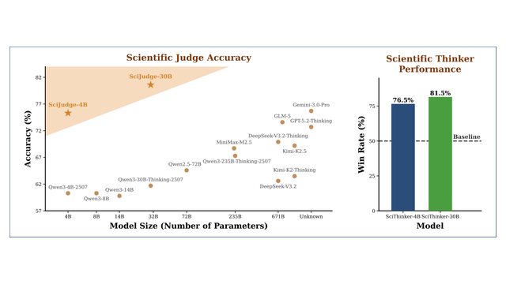

|
Hongji Chen 「陈鸿基」
I am an undergraduate student at Fudan University.
I am also a research intern with the OpenMOSS Team, jointly connected
with Fudan NLP Lab and the
Shanghai Innovation Institute, advised by
Prof. Xipeng Qiu.
I will start my Ph.D. study in Fall 2029 at the Shanghai Innovation Institute and Fudan University,
advised by Prof. Xipeng Qiu. I received a Ph.D. offer from the Shanghai Innovation Institute in
Summer 2026, and was the youngest SII Ph.D. offer recipient up to that time.
My research interests include multimodal reasoning and AI infrastructure. Recently, I have been
working on UMM (Unified Multimodal Models), VGM (Video Generation Models), and WAM (World Action
Model). Please feel free to contact me if you are interested in collaboration.
Mail /
CV /
Google Scholar /
Github /
Twitter /
LinkedIn
|
|
|

|
AI Can Learn Scientific Taste
Jingqi Tong, Mingzhe Li, Hangcheng Li, Yongzhuo Yang, Yurong Mou, Weijie Ma, Zhiheng Xi,
Hongji Chen, Xiaoran Liu, Qinyuan Cheng, Ming Zhang, Qiguang Chen, Weifeng Ge,
Qipeng Guo, Tianlei Ying, Tianxiang Sun, Yining Zheng, Xinchi Chen, Jun Zhao, Ning Ding,
Xuanjing Huang, Yugang Jiang, Xipeng Qiu
arXiv, 2026
project page
/
arXiv
/
github
/
models & datasets
/
demo
We propose Reinforcement Learning from Community Feedback (RLCF), training Scientific Judge to model
research taste from large-scale community signals and using it to improve Scientific Thinker for
high-potential scientific ideation.
|
|
|
Shanghai Innovation Institute Research Cockpit
Major participant, Shanghai Innovation Institute
Participated in building a full-process agentic research operating system for organized research. The
system upgrades AI from stage-specific assistance to automated literature search, idea generation and
evaluation, research-plan generation from goals, execution tracking, iterative verification, and
lifecycle management. InspireSkill is a
concrete outcome of this project, providing reusable skills and tool interfaces for agents to operate
the Inspire compute platform through reproducible workflows.
|
|
|
Shanghai Innovation Institute
Jul. 2026 - Present
Research Intern, advised by Prof. Xipeng Qiu
|
|
|
Fudan NLP Lab / OpenMOSS Team
Oct. 2025 - Present
Research Intern, advised by Prof. Xipeng Qiu
|
|
{kind=link}